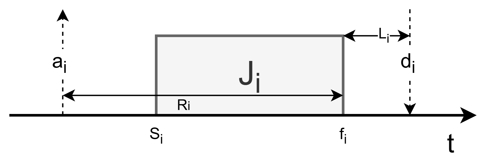
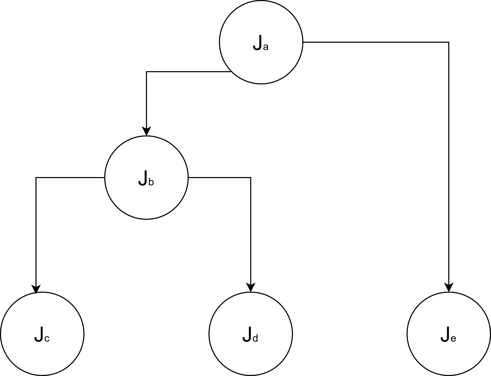
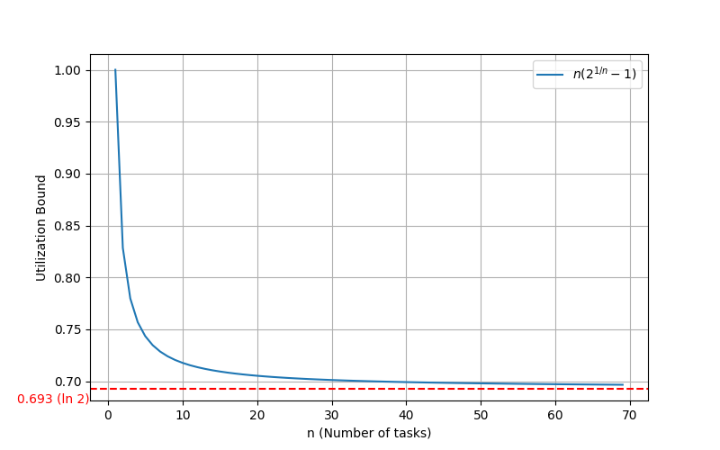
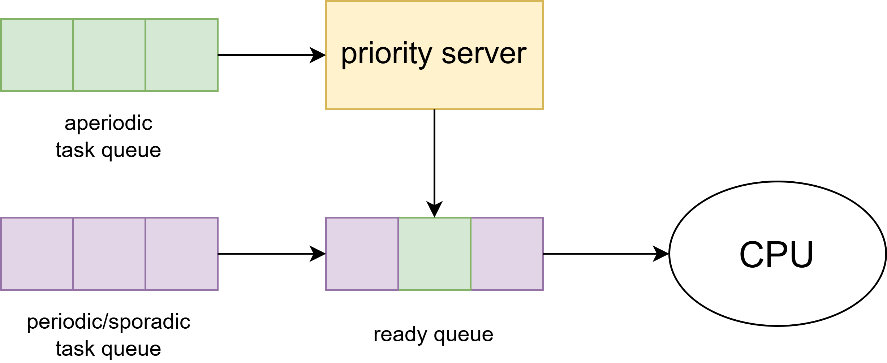
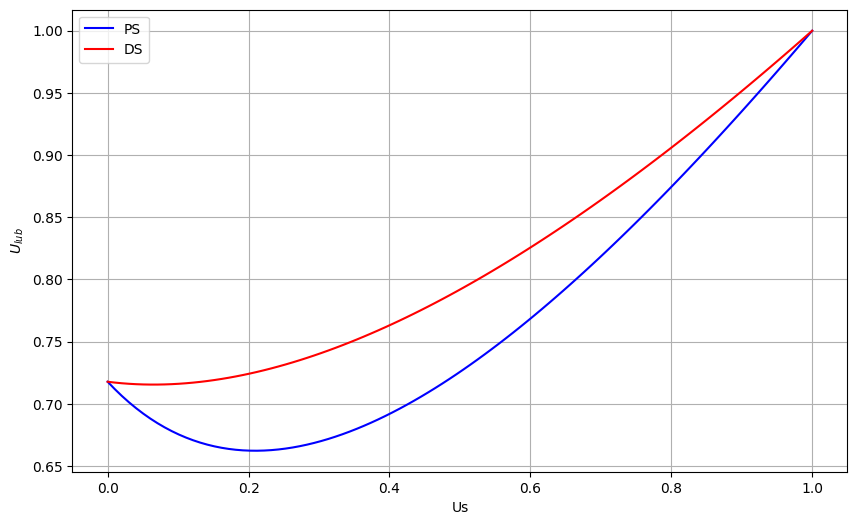

What is this? This simulator visualizes how different Real-Time Operating System (RTOS) scheduling algorithms prioritize and execute tasks over time. Add your custom tasks below, select a scheduling algorithm, and run the simulation to generate an interactive chart.
| Algorithm | Type | Task Environment / Constraints | Principle | Complexity | Optimality | Schedulability Guarantee |
|---|---|---|---|---|---|---|
| EDD (Jackson '55) |
Aperiodic | Sync activation, Independent 1|sync|Lmax |
Earliest Due Date | O(n log n) | Optimal | ∑k=1i Ck < di |
| EDF (Horn '74) |
Aperiodic | Async activation, Preemptive, Independent 1|preem|Lmax |
Earliest Deadline First | O(n2) | Optimal | ∑k=1i ck(t) < di |
| Tree Search (Bratley '71) |
Aperiodic | Async activation, Non-preemptive, Independent | Tree Search | O(n · n!) | Optimal | - |
| LDF (Lawler '73) |
Aperiodic | Sync activation, Precedence (DAG) 1|(prec,sync)|Lmax |
Latest Deadline First | O(n2) | Optimal | - |
| EDF* (Chetto '90) |
Aperiodic | Async preemptive, Precedence (DAG) 1|(prec,sync)|Lmax |
Modified EDF (Alters aj, dj) | O(n2) | Optimal | - |
| Spring (Stankovic '87) |
Aperiodic | Async non-preemptive, Precedence (DAG) | Heuristic Search | O(n2) | Heuristic | - |
| RMA (Liu & Layland '73) |
Periodic | Static Priority, di = Ti 1|fixed priority|∑ Ui |
Rate Monotonic | - | Optimal | U = ∑ (Ci/Ti) ≤ n(21/n-1) |
| DMA (Leung & Whitehead '82) |
Periodic | Static Priority, di ≤ Ti 1|(fixed priority,Di ≤ Ti)|Lmax |
Deadline Monotonic | - | Optimal | Di ≥ Ci + Ii |
| EDF (Priority) (Liu & Layland '73) |
Periodic | Dynamic Priority, di = Ti 1|dyn priority|Cmax |
Earliest Deadline First | - | Optimal | U = ∑ (Ci/Ti) ≤ 1 |
| PDA EDF (Baruah et al. '90) |
Periodic | Dynamic Priority, di ≤ Ti 1|dyn priority|Cmax |
Processor Demand Analysis | - | Optimal | L ≥ ∑ (⌊(L-Di)/Ti⌋ + 1)Ci |
| Polling Server (PS) | Mixed | Static Priority Server (RM) + Aperiodic requests | Periodic capacity Cs, fully discharges if queue is empty at start | - | Heuristic | Ups ≤ n [ (2 / (Us + 1))1/n - 1 ] |
| Deferrable Server (DS) | Mixed | Static Priority Server (RM) + Aperiodic requests | Maintains capacity Cs throughout the server period | - | Heuristic | Uds ≤ n [ ((Us + 2) / (2Us + 1))1/n - 1 ] |
| Total Bandwidth Server (TBS) | Mixed | Dynamic Priority Server (EDF) + Aperiodic requests | Deadlines assigned dynamically to not exceed bandwidth: dk = max(rk, dk-1) + Ck / Us | - | Heuristic | Up + Us < 1 |
Given a set of tasks J = {J1, &dots;, Jn}, a schedule is an assignment of tasks to the processor so that each task is executed until completion.
Formally a schedule is:
s : ℝ+ → ℕ such that ∀ t ∈ ℝ+, ∃ t1, t2 ∈ ℝ+ | ∀ t' ∈ [t1, t2), s(t) = s(t')
The tasks have different properties, that are used to schedule them, accordingly to the scheduling algorithm. Given the task Ji:

The feasibility constraints for the schedulability are:
The task are infinite sequence of identical activities (instances)
The execution order of the tasks has to respect a precedence relation, usually expressed with a Direct Access Graph (DAG) and are denoted as:

Resource access is particularly critical for Real Time OS, classical structure like semaphores can't be used
The scheduling is a nondeterministic polynomial (NP) complete problem
Given
Scheduling is the process of assigning a processor Pj and resource Rk to a task Ji under their constraints
Real-time scheduling disciplines are typically characterized by four primary design dimensions:
Since Hard Real Time system require feasibility of the schedule, it must be guaranteed in advance. Given this we can define two type of scheduler:
Scheduling metrics are essential tools used to evaluate, verify, and optimize the performance of a real-time system. While the primary goal of hard real-time systems is to ensure all deadlines are met, metrics provide the quantitative data needed to prove this will happen before the system even runs. Generally, a mix of those is used.
Given a set of task with feasible scheduling, following the problem definition, the optimization of some of it's parameters (like increasing the number of processors, decreasing the computation time or weakening the precedence constraints) can produce an unfeasible scheduling, as Ronald L. Graham demonstrated in 1966
To make the problem more tractable a classification is needed, where different algorithms solve different problems.
Ronald Graham, Eugene Lawler, Jan Karel Lenstra, and Alexander Rinnooy Kan proposed in 1979 a theoretical categorization of the scheduling algorithm, using the following three field annotation (α, β, γ)
Based on tasks Job description β: (synchronous or asynchronous activation, independent or precedence dependent, preemptive or non-preemptive), they can be solved with the following algorithms:
| sync. activation | preemptive async. activation |
non-preemptive async. activation |
|
|---|---|---|---|
| independent | EDD (Jackson '55) O(n log n) Optimal |
EDF (Horn '74) O(n2) Optimal |
Tree search (Bratley '71) O(n · n!) Optimal |
| precedence constraints |
LDF (Lawler '73) O(n2) Optimal |
EDF* (Chetto et al. '90) O(n2) Optimal |
Spring (Stankovic & Ramamritham '87) O(n2) Heuristic |
The EDD algorithm, invented by Jackson in 1955, solves 1|sync|Lmax:
where, in the three field notation
The EDF algorithm, invented by Horn in 1974, solves 1|preem|Lmax:
where, in the three field notation
The LDF algorithm, invented by Lawler in 1973, solves 1|(prec,sync)|Lmax:
where, in the three field notation
The EDF* algorithm, invented by Chetto in 1990, solves 1|(prec,sync)|Lmax:
where, in the three field notation
The periodic tasks are the majority of the task type usually executed in RTOS. Based on tasks Job description β, they can be solved with the following algorithms:
| di = Ti | di ≤ Ti | |
|---|---|---|
| Static Priority |
RMA Processor utilization approach ∑i=1n (Ci / Ti) ≤ n(21/n - 1) |
DMA Response time approach ∀ i, Ri = Ci + ∑j ∈ hp(i) ⌈ Ri / Tj ⌉ Cj ≤ Di |
| Dynamic Priority |
EDF Processor utilization approach ∑i=1n (Ci / Ti) ≤ 1 |
EDF Processor demand approach ∀ L > 0, L ≥ ∑i=1n (⌊ (L - Di) / Ti ⌋ + 1) Ci |
Cyclic Executive Scheduling is a deterministic, time-triggered scheduling approach where tasks are executed in a fixed, repeating sequence called a major cycle. While being logically simple, might be difficult to construct (bin packing problem)
The tasks are mapped in a set of minor cycles, that than constitute the major cycle
The schedulability guarantee of the following algorithm is based on two different factors:
Given a set of periodic task Γ, the utilization factor U is the fraction of processor time spent in the execution of the task set
UΓ = ∑i=1,...,n (Ci / Ti)
The schedulability test is sufficient, but not necessary:
where Ulub(A) is the least upper bound of the utilization factor of a given algorithm A
Ulub(A) = min(Ulub(A, Γ)) ∀ Γ
The worst case response time analysis is sufficient and necessary condition to determine the schedulability of a task set.
Ri = Ci + Ii
where Ii = ∑j ∈ hp(i) ⌈ Ri / Tj ⌉ Cj is the maximum interference that a task can experience.
Then the scheduling is granted if and only if Ri > di ∀ i.
The RM algorithm, invented by Liu and Layland in 1973, solves 1|fixed priority|∑ Ui:

where, in the three field notation
The EDF priority based algorithm, invented by Liu and Layland in 1973, solves 1|dyn priority|Cmax:
where, in the three field notation
The DM algorithm, invented by Leung and Whitehead in 1982, solves 1|(fixed priority, Di ≤ Ti)|Lmax:
where, in the three field notation
The Processor Demand Analysis EDF algorithm, invented by Baruah, Rosier and Howell in 1990, solves 1|dyn priority|Cmax:
where, in the three field notation
RM characteristics
EDF characteristics (corrected title based on context)
Mixed-task scheduling deals with systems where different types of tasks (periodic, sporadic, and aperiodic) must coexist on the same processor without compromising the deadlines of the critical tasks.
There are three main different approach to handle mixed tasks:

Static priority server insert aperiodic tasks in the ready queue, mixing with periodic tasks, then apply RM as for periodic tasks.
There are different type of static priority server:
The aperiodic tasks accumulate in the queue and at the start of the priority server period, it sets its capacity Cs to maximum, then
The schedulability analysis is computed using the Utilization Factor (PS+RM):
Ups ≤ n [ (2 / (Us + 1))1/n - 1 ]
The deferrable server is similar to the polling server, but handles the capacity discharge differently: as soon as an aperiodic tasks arrived, it is immediately moved to the priority server, until it hits the maximum capacity.
The schedulability analysis is computed using the Utilization Factor (DS+RM):
Uds ≤ n [ ((Us + 2) / (2Us + 1))1/n - 1 ]
By analyzing their utilization factor, we can find out that:

Dynamic priority server adapts the static priority server approach using EDF:
There are different type of static priority server:
The schedulability analysis is computed using the Utilization Factor (TBS+EDF):
Up + Us < 1